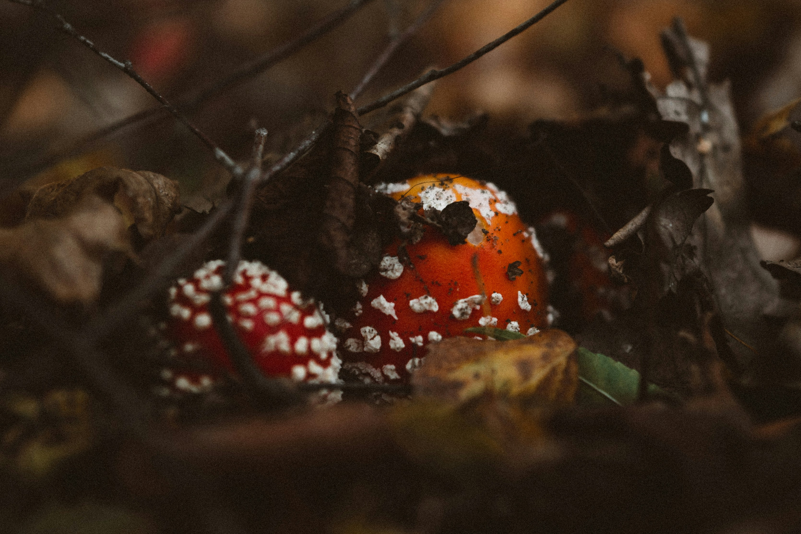
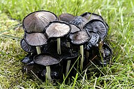
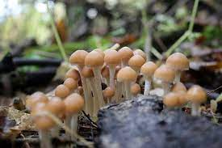
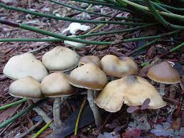

"The Good, the Bad, and the Ugly" is a false trichotomy (is that even a real word?). Nonetheless, it is an interesting
and fun way to categorize mushrooms. Pictured below are just some of the mushrooms that fall into the category stated above.

Fig.1 - Fly Agaric. Contains ibotenic acid--a neurotoxin and quasi-recreational drug.

Fig.2 - Alcohol Inky. Makes you sick if you drink alcohol.

Fig.3 - Psilocybe cubenis. The most widely cultivated psychedelic mushroom.

Fig.4 - An Ovoid. Another type of psychedelic mushroom.